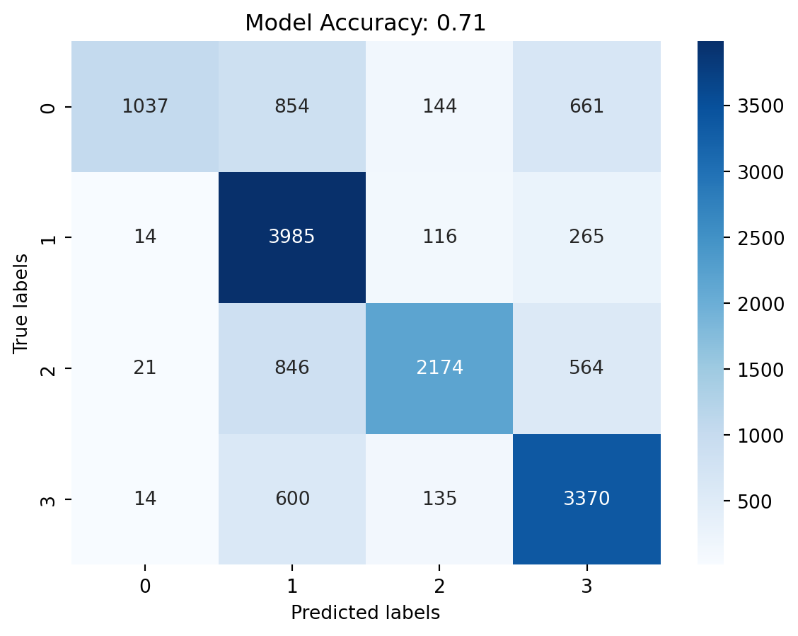

import pandas as pd
from sklearn.model_selection import train_test_split
from sklearn.feature_extraction.text import TfidfVectorizer
from sklearn.naive_bayes import MultinomialNB
from sklearn.pipeline import make_pipeline
from sklearn.metrics import classification_reportPerforming sentiment analysis on Twitter tweets using the Naive Bayes algorithm.
Loading and Preprocessing the Data
First, we load the data and explore its structure.
# Load the dataset
data = pd.read_csv('./twitter_training.csv' )
# Display the first few rows of the dataset
data.head()| Topic | Sentiment | Text | |
|---|---|---|---|
| 0 | Borderlands | Positive | im getting on borderlands and i will murder yo... |
| 1 | Borderlands | Positive | I am coming to the borders and I will kill you... |
| 2 | Borderlands | Positive | im getting on borderlands and i will kill you ... |
| 3 | Borderlands | Positive | im coming on borderlands and i will murder you... |
| 4 | Borderlands | Positive | im getting on borderlands 2 and i will murder ... |
Next, we preprocess the data by removing rows with missing text values.
# Remove rows with missing values in the 'text' column
cleaned_data = data.dropna(subset=['Text'])Preparing the Data for Modeling
We split the data into training and testing sets.
# Splitting the dataset into training and testing sets
X_train, X_test, y_train, y_test = train_test_split(cleaned_data['Text'], cleaned_data['Sentiment'], test_size=0.2, random_state=42)Building and Training the Naive Bayes Model
We use a pipeline to vectorize the text and train the model.
# Preprocessing and vectorization using a pipeline
model = make_pipeline(
TfidfVectorizer(),
MultinomialNB()
)
# Training the model
model.fit(X_train, y_train)Pipeline(steps=[('tfidfvectorizer', TfidfVectorizer()),
('multinomialnb', MultinomialNB())])Evaluating the Model
Finally, we evaluate the model’s performance on the test set.
# Evaluating the model
predictions = model.predict(X_test)
report = classification_report(y_test, predictions)
print(report) precision recall f1-score support
Irrelevant 0.95 0.38 0.55 2696
Negative 0.63 0.91 0.75 4380
Neutral 0.85 0.60 0.70 3605
Positive 0.69 0.82 0.75 4119
accuracy 0.71 14800
macro avg 0.78 0.68 0.69 14800
weighted avg 0.76 0.71 0.70 14800
Testing the Model with New Data and Visualization
Now, we will test the model with new data and visualize the accuracy of the model.
# Example new data to test
new_data = ["This movie was fantastic, I loved it!",
"The movie was okay, but I think the ending could be better",
"I did not like the movie, it was boring and too long"]
# Predicting the sentiment of the new data
new_predictions = model.predict(X_test)
print(X_test)
new_predictions61413 Looks to me like he failed to check out the wa...
44887 Wow, it takes all sorts of crazy people out th...
73662 Nvidia Unveils The World’s Fastest Gaming Moni...
36694 Huge radio play here. Reinvention / Corporate ...
2308 SO I HAPPY WHO ABOUT THIS.
...
12630 @Ronnie2K where is all my Mamba Edition extras...
49615 Sell 700k fifa coins fucking this game
12322 @NBA2K $ 107 for a four game break and I can't...
4355 has called me a madman.. I understood right fr...
52612 RDR2 at 31m makes really this boy super happy.
Name: Text, Length: 14800, dtype: objectarray(['Negative', 'Positive', 'Neutral', ..., 'Negative', 'Irrelevant',
'Positive'], dtype='<U10')Data Visualization
Creating a confusion matrix to illustrate the predictions made by the classifier on the test sets.
import matplotlib.pyplot as plt
from sklearn.metrics import accuracy_score, confusion_matrix
import seaborn as sns
new_data_actual_labels = y_test
# Calculating accuracy
accuracy = accuracy_score(new_data_actual_labels, new_predictions)
# Creating a confusion matrix
conf_matrix = confusion_matrix(new_data_actual_labels, new_predictions)
# Plotting the confusion matrix
sns.heatmap(conf_matrix, annot=True, fmt='g', cmap='Blues')
plt.title(f'Model Accuracy: {accuracy:.2f}')
plt.xlabel('Predicted labels')
plt.ylabel('True labels')
plt.show()
Interpretation
The four labels represent four sentiments: Positive, Negative, Neutral, and Irrelevant The diagonal entries in the matrix tell us how many predictions for each class were correct: the model correctly predicted class 0 for 1037 instances, class 1 for 3985 instances, class 2 for 2174 instances, and class 3 for 3370 instances. All of the off-diagonal entries represent misclassifications.
Overall, the model is most accurate with classes 1 and 3, where the diagonal values are high relative to the off-diagonal values. The model seems to struggle the most with accurately classifying class 2.